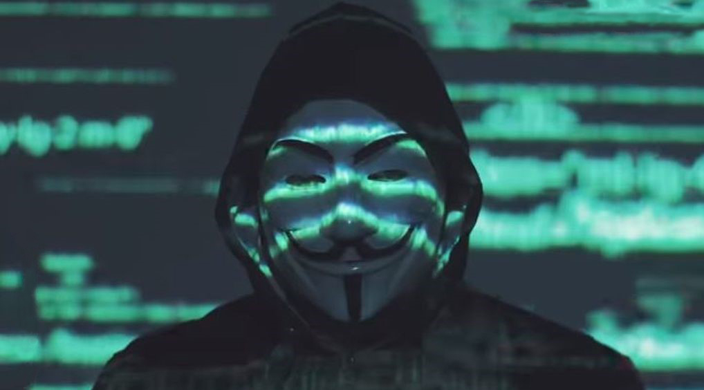

Anonymous: Resumen de todos los secretos que han publicado los hackers
La red de hackers tuvo mucha acción este fin de semana
Han sido días movidos para Anonymous desde que le declararon la guerra a Estados Unidos por todo lo ocurrido con George Floyd y vuelven al ataque, tal como ha ocurrido en otras ocasiones en las que incluso Chile se ha visto involucrado. A los ataques revelados ayer, donde se infiltraron en las radios de la policía de Chicago para emitir la canción Fuck the Police, entre otros, la agrupación de hackers ha publicado una serie de secretos perturbadores que resumiremos a continuación:
Los casos de pedofilia denunciadas en el Vaticano
A través de las redes sociales Anonymous difundió cerca de 6 mil casos de denuncias de abuso sexual infantil realizados por miembros de la iglesia. Si bien varios casos ya habían sido denunciados por la iglesia, hay otros que no había conocimiento y se le adjudican a Anonymous.
La temible red de contactos de Jeffrey Epstein
Jeffrey Epstein es un millonario que se suicidó y que ha sido acusado de mantener una red de tráfico de menores de edad y una red de tráfico sexual infantil. El empresario tenía una lista de clientes VIP, a que fue publicada por Anonymous y en la que se han podido ver nombres como Donald Trump, Naomi Campbell, Tony Blair, Kevin Spacey y Mick Jagger, entre otros.
Las últimas palabras de Michael Jackson
Anonymous publicó un audio telefónico que correspondería a Michalel Jackson hecho el 25 de Junio de 2009, un día antes de su muerte y que tendría relación con la red de pedofilia de Epstein. En el audio se puede escuchar al Rey del Pop confesarle a alguien, aparentemente su abogado, el miedo que tenía porque alguien muy poderoso del gobierno le hiciera algo. El dice:
“No sé si debería decir esto, no sé quién podría estar escuchando. Puede haber un grupo de personas que… se quieren deshacer de mí. Ellos ya no quieren que esté aquí”.
La misteriosa muerte de Lady Di
Esta es una de las teorías conspirativas más importantes que se habrían confirmado con las publicaciones de Anonymous. Según el grupo de hackers, la princesa Diana habría sido asesinada por la realeza británica para que no hiciera público unos casos de abusos sexuales infantiles dentro de la monarquía.